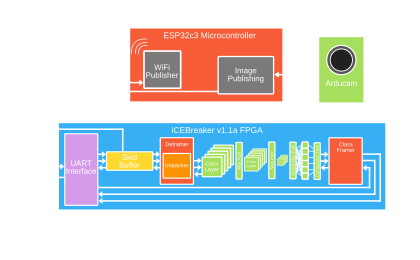

Chapter 1: Introduction
While Artificial General Intelligence (AGI) and Large Language Models (LLMs) currently dominate the AI landscape, their deployment remains largely restricted to datacenters. This is primarily because their generality demands massive parameter counts, requiring extensive memory and compute overhead to operate. Furthermore, as AI inputs scale from text to high-bandwidth modalities like live video, outsourcing inference by transmitting raw data to the cloud becomes unsustainable for local network infrastructure.
Conversely, application-specific models that are deployed at the edge operate with drastically fewer parameters, eliminating this network bottleneck. However their remote nature demands lower power, and therefore a highly optimized and efficient architecture. Embedded inference is highly compatible with the Internet of Things (IoT), enabling intelligent, localized data extraction by transmitting only the resulting inference, which heavily reduces network bandwidth. Accelerating inference on inherently low-compute edge devices, specifically the Lattice iCEBreaker V1.1a FPGA [7] requires full utilization of all available resources: LCs (logic cells), DSP blocks (Digital Signal Processing), and BRAMs (Block RAMS). When paired with the ESP32c3 microcontroller [6] as shown in Figure 1.1, a complete, partitioned system that perfectly utilizes the distinct strengths of both software and hardware can be deployed.
